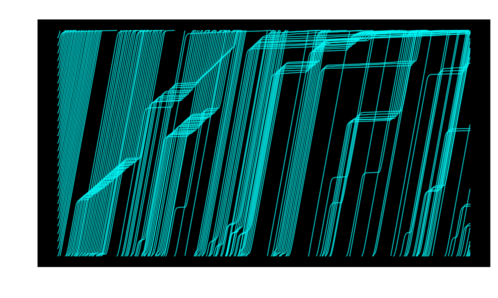
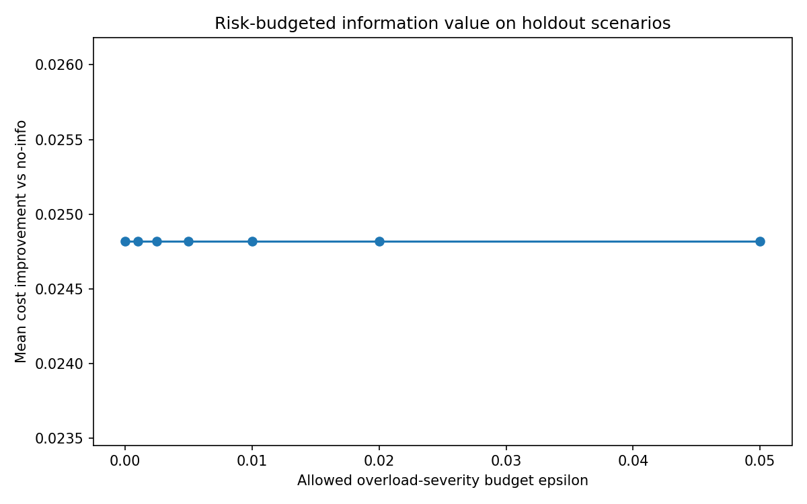

Ring-road surrogate
A reduced stochastic Optimal Velocity ring-road script preserves the original stop-and-go wave diagnostic and a deterministic representative rerun path.

Claim-bounded reduced-surrogate archive
Stop-and-go waves, synchronization risk, and risk-budgeted information release in finite-capacity toy traffic networks.
有限容量 toy traffic network における同期リスクと情報提示の関係を、実交通政策ではなく claim-bounded な診断アーカイブとして整理したリポジトリです。
In finite-capacity toy traffic networks, overly synchronized or overly precise shared information can amplify overload risk, while risk-budgeted low-rate, coarse, staggered, or guarded information release can be studied as a synchronization-risk diagnostic within tested surrogate conditions.
A reduced stochastic Optimal Velocity ring-road script preserves the original stop-and-go wave diagnostic and a deterministic representative rerun path.

Selected evidence files preserve toy-network holdout results and budget-value / holdout-frontier summaries from the v0.2.x audit sequence.

Repository package version: v0.3.2-public-landing-and-metadata-refresh
Scientific manuscript baseline: v0.3.1 integrated revision. This refresh reorganizes the public repository, Pages entry point, manifest, metadata, and discovery files; it does not expand the scientific claim scope.